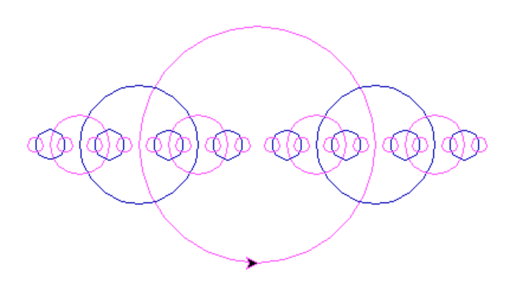

Circles

The purpose of this problem is to recursively draw circles.
Please follow the problems in the order shown!
This problem will have 5 parts. For each part, create a new function
with the specifications that are given.
To test if each function works, create a main and call the function
within it. The functions should work as follows:
- draw_circle_1(100)
- draw_circle_2(100)
- draw_circle_rec(200, 5)
- alternate_colors(3)
- draw_circles_alternating(200, 5)
Part 1
Write a function called draw_circle_1 that draws a single circle.
It should take the circle's radius as a parameter. The precondition
for this function is turtle's default state (facing east, pen down)
Part 2
Write a function called draw_circle_2 that draws the picture
at a depth of 2.
This should use draw_circle_1 in its implementation, and also have the
circle's radius as a parameter.
Part 3
Write a function called draw_circle_rec that recursively
draws the circles as shown in the picture.
This function should take a radius and a depth as parameters.
Part 4
Write a function called alternate_colors
that changes turtle's pencolor depending on the parameter
given.
This should take 1 parameter (depth), and depending on whether
depth is even or odd, change turtle's pencolor accordingly.
You can use any color of your choice (as long as it's visible).
Part 5
Create a new function called draw_circles_alternating
that draws the circles alternating in color.
You can use copy and paste your recursive solution into this
function for this part. This function should take a depth and a
radius as parameters, and should draw the picture as shown in the
pitcure at the beginning of the document (with colors this time!)